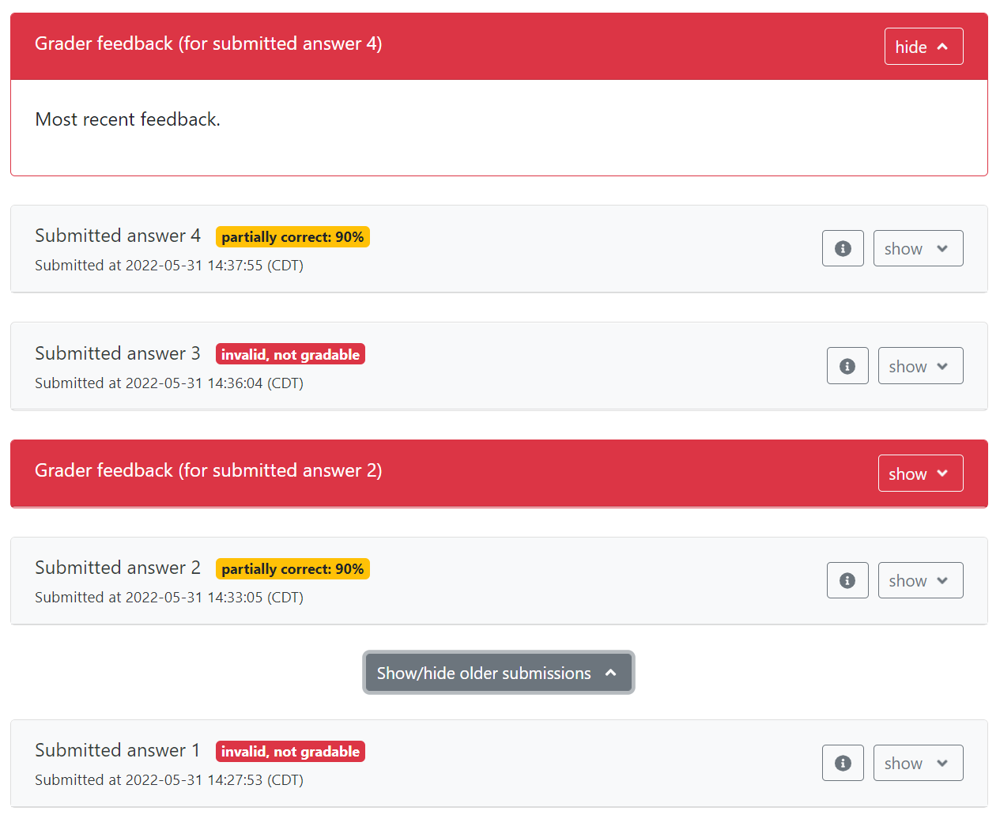

Thanks to the work of numerous contributors, the PrairieLearn development team is looking forward to introducing improvements in the instructor's experience for manual grading questions in the coming months. As part of these improvements, some changes in visual elements for the student's question view become necessary. So if you have any questions that use manual grading, you may need to review some of your questions.
One of the features of manual grading is the ability to provide
open-ended feedback to students, which allows students to understand
their misconceptions and improve their learning experience. This
feedback is typically provided
using the grade upload feature, and so far required
question creators to include it explicitly in
the question.html file. However, a recent change has
updated the student's question page to show this feedback by default
instead.

One caveat of the change above is that, if
the question.html file continues to include the
feedback in the submission panel, then feedback will be shown to
students twice, once in the new panel, and once where it was shown
before. To avoid this duplication, instructors are strongly
encouraged to remove any reference to the manual feedback text from
their questions.
For most instructors using manual feedback, the question will
include a reference to {{{feedback.manual}}} somewhere
in the question file. For reference, the manual grading
documentation had the following snippet as a suggestion. You are
encouraged to remove this snippet from your questions.
<pl-submission-panel>
{{#feedback.manual}}
<p>Feedback from course staff:</p>
<markdown>{{{feedback.manual}}}</markdown>
{{/feedback.manual}}
</pl-submission-panel>
Want to help make PrairieLearn better? It's open source and contributions are welcome!